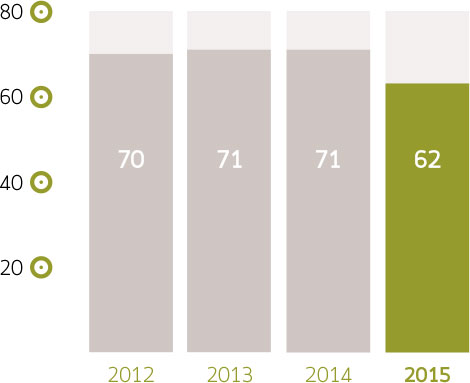
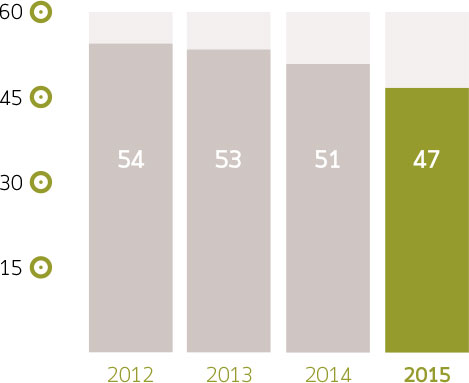
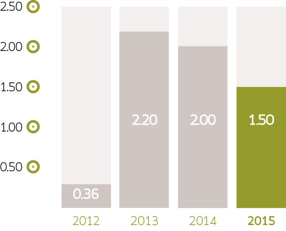

ANÁLISIS DE RESULTADOS

DE LA ADMINISTRACIÓN
Informe del Director General para el ejercicio 2015
Ventas, utilidad y margen brutos
Las ventas consolidadas incrementaron 1%. El impacto negativo de la caída de los precios de los productos que vendemos fue, por mucho, mayor al efecto favorable de la depreciación del tipo de cambio. El tipo de cambio promedio en 2014 fue de $13.30 pesos por dólar y en 2015 fue de $15.88 pesos por dólar, lo que representó una depreciación anual de 19%.
La utilidad bruta aumentó 5%, de $1,051 mdp en el 2014 a $1,106 mdp. Logramos incrementar el margen bruto a pesar de las reducciones de precio de productos clave tales como solventes, derivados lácteos, derivados del maíz e insumos para minería.
Nuestro margen bruto incrementó 80 pb a 18.2% gracias a un efectivo control de costos y creciente enfoque en ventas de productos con mayor margen tales como mezclas, productos envasados y químicos para la industria de la alimentación. El debilitamiento del peso contra el dólar norteamericano (USD) de 19% en 2015 solo logró anular parcialmente la contracción en los precios de las materias primas, particularmente las derivadas del petróleo, ya que la caída en los precios de estos productos, en términos de dólares, ha sido de entre 30% y 60%.
| 2014 | 2015 | |
|---|---|---|
| 17.4% | Margen bruto | 18.2% |
Utilidad de operación y EBITDA
La utilidad de operación aumentó 19% en 2015, pasando de $195 mdp en 2014 a $232 mdp.
El margen operativo fue 3.8%, mayor en 60 pb que en 2014. El sólido desempeño de la utilidad de operación se debió a un mayor margen bruto, apoyado por un creciente énfasis en venta de productos de valor agregado. El EBITDA aumentó 13% comparado con 2014 mientras que el margen EBITDA creció 60 pb para colocarse en 5.6%.
Los gastos de operación (excluyendo depreciación) aumentaron 2% comparado con 2014. Como porcentaje de ventas los gastos incrementaron ligeramente de 12.4% en 2014 a 12.6% en 2015.
| 2014 | 2015 | |
|---|---|---|
| 12.4% | Gastos / Ventas | 12.6 % |
Gastos financieros y utilidad neta
Los gastos por intereses netos tuvieron un decremento de 11% año con año. La tendencia hacia reducir el gasto financiero se mantuvo durante todo 2015.
La utilidad neta de 2015 fue de $34 mdp, equivalente a más de seis veces la registrada en 2014. La utilidad neta fue favorecida por el incremento en utilidad de operación y EBITDA y por la reducción en gastos por intereses. Estos efectos compensaron el impacto negativo de las pérdidas cambiarias de $106 mdp registradas en 2015.
Capital de trabajo y generación de efectivo
Al cierre del año 2015 nuestro capital de trabajo equivalía a 22 días de venta, lo que representa una reducción de 11 días comparado con el cierre de 2014. Reiteramos que para la dirección de la empresa es prioritario continuar reduciendo inventarios y acortando los días de cartera de clientes para poder reducir nuestro nivel de apalancamiento.
Como resultado del incremento en EBITDA y de la reducción en el capital de trabajo, se logró incrementar la caja en 19% durante 2015, al crecer de $324 mdp al cierre de 2014 a $386 mdp al cierre de 2015: un incremento en la caja disponible de $62 mdp.
Días Inventarios

Días Cartera

Días Cuentas por Pagar

Deuda neta y métricas de apalancamiento
La deuda neta al cierre del 2015 fue de $518 mdp, menor en $93 mdp (o 15%) que al cierre de 2014. Como informamos al público inversionista en su momento, el 4 de diciembre de 2014 concluimos el refinanciamiento de un crédito sindicado con HSBC México, S.A., Institución de Banca Múltiple, Grupo Financiero y Grupo Financiero Inbursa, S.A., por la cantidad de $610 mdp.
El nuevo plazo del crédito, que originalmente vencía en Junio de 2015, es de 4 años con un año de gracia.
La relación Deuda Neta / EBITDA al cierre de 2015 se redujo a 1.5 veces de 2.0 veces al cierre de 2014. Este nivel está en línea con nuestra política interna de no más de 2 veces. Es importante resaltar que después de la adquisición de Coremal, que concluyó el 31 de diciembre de 2013, este indicador alcanzó el nivel máximo en más de 2 años llegando a 2.8 veces al cierre del 2T14, viniendo de 1.8 veces al 3T13. Lo anterior fue causado por la consolidación de la deuda de Coremal en Brasil (equivalente a $285 mdp) y por los créditos contratados por Pochteca para financiar la adquisición de Coremal ($170 mdp). En su momento informamos al mercado que teníamos una hoja de ruta claramente definida para, a más tardar a diciembre de 2014, regresar a nuestro objetivo de 2 veces, y así se hizo.
Continuaremos enfocados en la generación de flujoContinuaremos enfocados en la generación de flujo a través de un enérgico manejo del capital de trabajo y de controles de costos y gastos para lograr un mayor EBITDA.a través de un enérgico manejo del capital de trabajo y de controles de costos y gastos para lograr un mayor EBITDA.
En 2015 la cobertura de intereses (EBITDA / intereses) fue de 3.3 veces. Este indicador es superior al 2.7 veces de 2014.
| 2014 | 2015 | |
|---|---|---|
| Deuda Neta (mdp) | 611 | 518 |
| Deuda Neta / EBITDA 12 M | 2.0x | 1.5x |
| Cobertura de Intereses | 2.7x | 3.3x |
| Acciones en circulación | 130,522,049 | 130,522,049 |
Deuda Neta / EBITDA (veces)

Fondo de recompra de acciones
Los operadores del fondo de recompra de acciones de Grupo Pochteca son:
- Punto Casa de Bolsa, S.A. de C.V.
- GBM Grupo Bursátil Mexicano, S.A. de C.V., Casa de Bolsa (GBM)
Como informamos al público inversionista el 7 de octubre de 2015, a partir de dicho mes comenzamos a operar el fondo de recompra de acciones con GBM. Dicho fondo de recompra de acciones ha venido siendo operado con Punto Casa de Bolsa, S.A. de C.V., la cual continuará haciéndolo conjuntamente con GBM. Con esta iniciativa Pochteca pretende impulsar la liquidez de sus acciones en el mercado bursátil, contando con el apoyo de las citadas instituciones.
Formador de mercado
El 22 de octubre de 2015 informamos al público inversionista la terminación del contrato de servicios de formación de mercado con UBS Casa de Bolsa, S.A. de C.V., UBS, Grupo Financiero (“UBS”). Pochteca agradece la labor que UBS realizó durante el tiempo que participó como formador de mercado de la empresa.